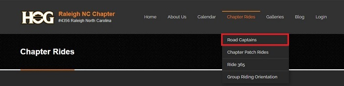

The app explained
Thank you for volunteering to be a Road Captain for the Raleigh NC Chapter of HOG.
As you know, any rider that is not a member of the Raleigh NC chapter has to sign a release form, or waiver, when participating in one of our chapter rides. Currently we rely on riders knowing if their membership is current or not. If not current, they may still go on the ride but they need to sign a waiver just like any other guest. Not everyone is aware that to be a member of a local chapter you have to be a current member of national. If your national membership expires, so does your local membership.
We have an app that assists with this proccess. The apps name is HogScan and it is a smartphone application that Road Captains download onto their smartphone to ease the check-in process. There is a one time $0.99 charge for the app. It is not a requirement that you download and use it.
When using the app to check-in members, if membership is not current you will see "(EXPIRED)" next to the member's name or their name my not be in the list. If you try and check-in an expired member there will be a pop-up saying "This member is not current" and you will not be able to check the person in by using the app. This person will need to sign a waiver
NOTE: When using the app you can see member's HOG ID and ICE (In Case of Emergency) information. This information is private and is not to be shared with anyone, including other members.
Using the app
Download and install the app
- Android users can find the app on the Google Play Store (search for hogscan)
- iPhone users can find the app on the App Store
If you have not created an account on the website, you will need to do so. If you have any problem send an email to the webmaster for help resolving the issue.
App Screens - a quick tutorial

This is the screen that shows when you first install the app.
Tap the 'CHOOSE CHAPTER' button and scroll down to choose our chapter. It is listed in the dropdown as "Raleigh NC Chapter #4356".
Enter the same credentials (username and password) that you use to sign into the website. - iPhone users, you will be able to save your password in your keychain - Andriod users, there is no option to save your password at this time
Tap the "SIGN IN" button to login

After a successfull login notice the row of icons along the bottom. From left to right they are:
- THE EVENT
- When viewing the calendar, the flag icon is displayed next to the current event. In this screenshot, "Pre meeting social hour" is the current event. You can either tap on the list to go to the current event or tap on the flag icon at the bottom to bring you to the current event.
- CHECK IN
- This is no longer in use. Tapping it will open your phone's camera.
- CALENDAR
- Tap the calendar icon to show you a list of UPCOMING EVENTS similar to what is displayed in the screenshot.
- MEMBERS
- Tap to open a list of chapter members. You can then search for members to check them into an event.
The bottom row shows the calendar view is selected.
The thumbs up icon shown in the calendar view means you have RSVP'd to that particular event on the website's Event Calendar.
Note the hamburger menu to the right of UPCOMING EVENTS. More on that later.
This screenshot shows a current event. Notice at the top the indication that says "CURRENT EVENT". This view shows those members who have RSVP'd to the event. If the member is at the event you can swipe left and check them in. Note, a member may RSVP to an event and not show. In that case, you do not check them in.
Be aware that there can be only one Current Event at a time. While we very rarely have two events at the same time, some events such as the Social Hour and the Monthly Chapter Meeting have times that are close. Someone may be checking members into the Social Hour event which means that members cannot be checked into the Monthly Chapter Meeting event.
The motorcycle icon to the left of a member's name identifies that member as a Road Captain.
This screenshot shows the members list for Raleigh HOG. Access it by tapping the MEMBERS icon at the bottom of the screen Members who did not RSVP may still be checked in by looking them up in the members list.
We have a lot of members and it's awkward to scroll. I find it easiest to start typing in the member's last name to find them for check-in.
This screenshot shows the result of swiping to the left to check-in a member. Tap the 'Check In' box to check a member into the current event. Check-in is successful when you see a check mark.
NOTE: Our Safety Officer and Head Road Captain will tell you, we do not use "CALL ICE". Let the first responders do that. It's their job and they're trained for it.

The event should be current at the time the event starts.
We normally start checking members into the Monthly Chapter Meeting fifteen minutes before the meeting starts. In that case, the Social Hour will be the Current Event so you will have to select the Chapter Meeting from the list of events in the Calendar and then tap "MAKE EVENT CURRENT" to start checking members in.
As previously shown, tap the 'MEMBERS' icon at the bottom to display a list of chapter members. Tap the motorcycle icon next to the search box and the members list will be organized to show current Road Captains, listed alphabetically, first in the list. This is useful when checking in Road Captains to a Road Captain only event such as a pre-ride.
Remember that hamburger menu in the upper right that was pointed out a few times?
Tap it to open the screen shown
- Then tap the "greater than" icon to show;
- Your ICE information. You can edit and change it here.
- Your Chapter expiration date
- Your National expiration date
- Your Release expiration date
- The option to check yourself into the Current Event
- Or, tap 'SIGN OUT' to sign out of the app until the next ride/event
Getting the most from the website
While you do not have to log into the website each time, if you are not logged in (or have never logged in) you are missing information that only Road Captain's have access to. As shown in the following screenshot, when not logged in and hovering over the "Road Captains" link in the navbar there is nothing to see other than the list of current Road Captains when the link is clicked.
As shown in the following screenshot, when you are logged into the website and hover over the "Road Captains" link in the navbar you have access to additional information that only Road Captains can see.
This includes the Road Captains Calendar, where pre-rides are scheduled, as well as the Road Captain's Forms and Documents which you should be familiar with.